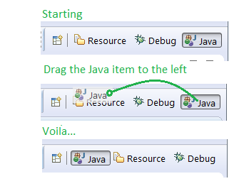

Here are some of the more noteworthy things available in milestone build M2
(September 20, 2013) which is now available for download.
| Platform |
| Perspective re-ordering |
You can now drag and drop the items in the perspective switcher to change the order of your open perspectives.

|
| Added UI timing API |
SWT has added two new events, SWT.PreEvent and SWT.PostEvent,
which are sent before and after all events and async runnables. These events can
be used to measure the time spent on processing any events. This
can be useful for detecting slow event listeners. Because of its pervasive effect
on all events, this listener should be used with extreme caution.
For an example of how this can be used, take a look at the
Watchdog plugin in SWT examples.
|
| New debugger examples |
New examples have been added to the Platform Debug git repository. The org.eclipse.debug.examples.mixedmode project demonstrates
how to use Debug's mixed-mode launching support. The org.eclipse.debug.examples.memory project provides sample content to display
in the Memory and Registers views.
|
| PDE |
| API Tools javadoc tag visibility matches Java Language Specification |
API Tools supports API restrictions using javadoc tags such as
@noextend and @noreference. The API Tools builder has an option to add problem markers for invalid use of the tags. The
logic to check whether a tag is valid has been upgraded and now follows the visibility rules in the
Java Language Specification (JLS).

|
| API Tools moved to JavaSE-1.6 |
All API Tools plug-ins now have a bundle required execution environment (BREE) of JavaSE-1.6.
|
| Target platform content is no longer stored in preferences |
The target platform specified on the Target Platform preference page uses flexible target definitions, stored in .target files,
to specify the set of plug-ins PDE should build against and use to launch applications. However, the content of the target platform
was previously stored in preferences. This could lead to inconsistencies between what you expect to exist in the target platform and
what is actually available. This problem was more noticeable when using a complex target definition containing feature or software
site locations.
In Luna, the target platform information is always created from the target definition chosen on the preference
page. In addition to reducing inconsistencies in the target, there are performance improvements when interacting with the
target.
|
| Feature selection dialog filters by plug-ins |
When entering text into the filter field of the feature selection dialog, features that contain a plug-in matching
the filter will be returned. This provides a quick way to add the correct feature to include in a product.

|
| OSGi bundle exceptions are displayed in the manifest editor |
Certain syntax errors, such as missing a comma between entries in the Require-Bundle header, cause bundle exceptions
when PDE tries to add the bundle to an OSGi State. The exceptions are now logged and displayed in the manifest editor.

|
| Equinox |
| Equinox OSGi framework update |
The Equinox Framework implementation has been updated to implement the latest
API available for the upcoming OSGi R6 Core Framework specification
(to be finalized in March 2014). Most of these
were implemented as part of M1 also. They are mentioned here again because
OSGi has made the RFCs publicly available in a git repository as they are
being written. See the links below for the latest RFC documents:
- Introduction of Service Scopes to the OSGi Service Registry
(RFC 195)
- Improvements of Weaving Hooks
(RFC 191)
- Clarification of hooks on the system bundle
(RFC 198)
- Native environment namespace
(RFC 188)
- Data Transfer Objects
(RFC 185)
- Extension Bundle Activators - new to M2
(RFC 204)
- Addition of FrameworkWiring.findProviders - no RFC
|
| Equinox Configuration Admin update |
The Equinox Configuration Admin implementation has been updated to implement
the OSGi Configuration Admin Service Specification version 1.5. The previous
release of Equinox Configuration Admin implemented version 1.3.
|
| Equinox Regions update |
The Equinox Regions implementation has been updated to take advantage
of Extension Bundle Activators
(RFC 204)
coming in the OSGi R6 specification.
This allows Equinox Regions to insert its isolation model before
the framework is launched so that proper region behavior can be
established before any bundles are loaded in the framework.
|
| Equinox Metatype update |
The Equinox Metatype API has been updated to add the methods to
get the minimum and maximum values of an attribute definition.
(see bug 416640)
|
| |
The above features are just the ones that are new since the previous milestone
build. Summaries for earlier Luna milestone builds: